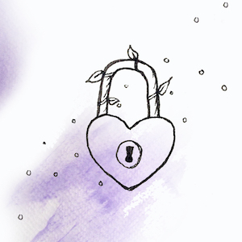

Securing Social Media
Social Media is exposed by default. Photos are public, anyone can be friended or followed, posts are broadcast throughout the network. Securing social media is a personal choice of what you want to expose, but your options are very much limited by the design of the social media platform. You can only be as secure as the website or app allows you to be. As you explore the following social media strategies, prioritize your safety and think about how social media features enhance or detract from that safety. Concern about location tracking may mean editing profile information and removing photos, while harassment may lead you to make your account private. No single approach is correct, nor is it a guaranteed way to secure yourself. However, understanding how you can customize social media will give you significant more control over your online experience.
Privacy Settings
Every social media platform has settings that enforce privacy. The degree of privacy varies wildly, and is often accompanied by a minor loss of website functionality. Here are links to explanations of privacy settings for popular platforms; get familiar with what's available and decide what is best for your security needs. The most common feature is to make an account private instead of public, meaning that only your friends and followers can see your account. While this can be a great way to combat harassment or stalking, it's unfortunate that you have to reduce your visibility to accommodate unwanted behavior from a controlling partner. It's okay if you don't want to make that concession, and it's okay if you think it'll help protect you.
Location Tracking
Most social media apps and websites want to advertise your location in your online activity. While this fun for people who have the safety to broadcast personal information, it can be dangerous if you need physical security from a controlling partner. You can still use nearly every feature on every social media platform without providing your location, so it's an easy vulnerability to address. When using apps, disable location permissions for the app. On websites, your browser may ask for your location or will provide it automatically—decline the location request and/or check your preferences to disable location sharing. If your profile indicates where you live or where you work, consider removing that information, as it can often be collected by 3rd party websites who then sell that information publicly.
Location can be revealed by less obvious means. Even if your account is very private, friends tagging you in a photo could broadly expose your location to anyone in their social network. RSVPing to local events or following local organizations also indicate your physical proximity. It's overwhelming to think about all the different kinds of data that expose location. Being totally off-the-grid might be impossible, so use your discretion in deciding which locations should be exposed. You can ask your friends not to tag you out of respect for your privacy. You can make a mental note of local events without using the website to RSVP. While no approach is perfect, they are all tools available to you for reinforcing your privacy.
Hacking
Our social media is rife with intimate conversations, connections, and media. As secure as your social media account may be, being hacked could still expose years of online activity and compromise any app or website attached to your account. The easiest way to prevent hacking is to use a strong, unique passphrase as explained in our Protect Your Passwords defense strategy, combined with our Two-Factor Authentication strategy. Together, these strategies ensure that your partner or a malicious hacker cannot easily access to your social media without physical access to your phone and private knowledge of your password.
 Be mindful of phishing schemes: many accounts are hacked simply because someone logged-in through an email link or website that looked official. As a rule of thumb, legitimate websites will never ask for your password via email. If they do, it's likely a phishing scheme. Whenever you receive an email about your social media account that requires you to log-in, manually go to the website through your web browser or app, rather than following the provided link. Lastly, be wary of logging into websites through your social media account. Although it may seem easy, you can't know for sure whether the website is a fraud, collecting your email address and password to hack your accounts.
Be mindful of phishing schemes: many accounts are hacked simply because someone logged-in through an email link or website that looked official. As a rule of thumb, legitimate websites will never ask for your password via email. If they do, it's likely a phishing scheme. Whenever you receive an email about your social media account that requires you to log-in, manually go to the website through your web browser or app, rather than following the provided link. Lastly, be wary of logging into websites through your social media account. Although it may seem easy, you can't know for sure whether the website is a fraud, collecting your email address and password to hack your accounts.
Mindfulness of Data
Using a social media account over the years accumulates a ton of followers, photos, and posts. When securing your account, it's helpful to make an audit of what you've exposed over time, whether it's a risk a to you now, and whether your social network could compromise your safety. Since friends and followers can generally access everything you've posted, it's a good idea to remove anyone you don't know or could be quietly sharing your information with your partner. Review your profile information and decide whether it exposes any intimate data, like location or work, that you don't want public. Delete any content you wouldn't want to be associated with. It can be difficult letting go of these memories—fortunately, many websites offer an option to download your entire social media history. This is a great way to keep your memories, preserve evidence of harassment or abuse, and reflect how much of your life is really exposed online.